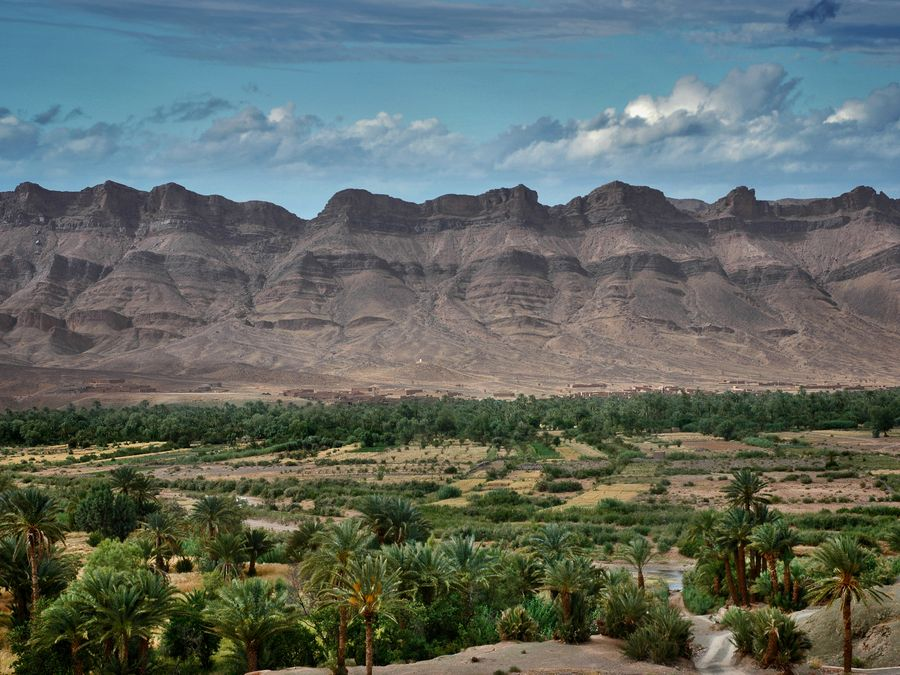

Private tour · 2 days / 1 night
Desert Express: 2-Day Private Tour from Marrakech to Zagora
A 2-day private tour from Marrakech to the Zagora desert with your own driver: cross the High Atlas, visit Ait Ben Haddou, follow the palm groves of the Draa Valley and spend a night in a desert camp after a camel ride at sunset.
- 100% private tour
- Hotel pick-up in Marrakech
- Camel ride at sunset
- Free cancellation up to 14 days
The Sahara in a weekend: short trip, big memories
This 2 days tour from Marrakech is the best option when you have little time but want to sleep in the desert. It is private, so you travel only with your family or friends and stop wherever you like along the way.
A 2-day desert trip from Marrakech goes to Zagora, not Merzouga: Merzouga is about 560 km away, too far for one night. In two days you see the High Atlas, Ait Ben Haddou and the Draa Valley, ride a camel and sleep in a camp. For the big Erg Chebbi dunes, choose 3 days or more.
- Marrakech
- Tizi n’Tichka
- Ait Ben Haddou
- Draa Valley
- Zagora
- Marrakech
2-day itinerary from Marrakech to Zagora
1Marrakech – Ait Ben Haddou – Draa Valley – Zagora≈ 360 km · 7 h driving
Pick-up at your riad or hotel in Marrakech at 7:30. Cross the High Atlas on the Tizi n’Tichka pass (2,260 m) and visit the UNESCO-listed ksar of Ait Ben Haddou. After lunch, drive through Ouarzazate and Agdz into the Draa Valley, the longest palm grove in Morocco. At sunset, ride a camel to your desert camp near Zagora for dinner, music and a sky full of stars.
2Zagora – Agdz – Ouarzazate – Marrakech≈ 360 km · 7 h driving
Wake up for the sunrise over the desert, have breakfast at the camp and ride back to the car. Return north through the kasbahs of the Draa Valley and Ouarzazate, cross the Atlas again and arrive at your accommodation in Marrakech in the early evening.
Why travellers choose this short desert trip


What is included in your private tour
Included
- Private air-conditioned car or minivan
- English or Spanish-speaking driver
- Fuel, tolls and parking
- 1 night in a desert camp
- Dinner and breakfast
- Camel ride in Zagora
- Pick-up and drop-off at your hotel in Marrakech
Not included
- Lunches and drinks
- Entrance fees (Ait Ben Haddou)
- Local guides in the sites (optional)
- Tips and travel insurance
Questions about the 2 days tour from Marrakech
Can I go from Marrakech to Merzouga in 2 days?
It is not recommended. Merzouga is about 560 km from Marrakech, around 9 hours each way, so you would spend the whole trip in the car. In 2 days, Zagora is the right desert; for Merzouga, book our 3 days tour or longer.
Is Zagora the real Sahara?
Zagora is in the Sahara region of the Draa Valley, but its dunes are smaller than Erg Chebbi in Merzouga. It is perfect for a first taste of the desert, a camel ride and a night in a camp.
Is this 2-day tour private?
Yes, it is 100% private. The car, the driver and the schedule are only for you, and you can change the stops at any time.
What should I pack for one night in the desert?
A warm layer for the night, a scarf against sun and sand, sunglasses, sunscreen, comfortable shoes and a small bag for the camp. Leave your big luggage in the car.
How do I book the tour?
Send us your dates by WhatsApp or the contact form. You confirm with a 20% deposit and pay the rest in Morocco. Cancellation is free up to 14 days before departure.
Ready for the desert?
Tell us your dates and we will organise your 2-day private desert tour from Marrakech to Zagora.
Chat on WhatsAppSee all tours from Marrakech